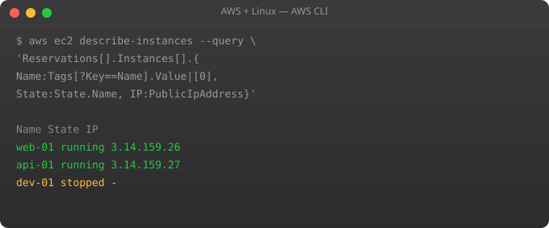

AWS Linux Tutorial -- Part 9: AWS CLI Mastery

The AWS CLI is your command-line interface to the entire AWS platform. Mastering it means you can do anything the AWS console can do, faster and repeatably, from your Linux terminal. This part covers advanced CLI techniques that experienced cloud engineers use daily.
CLI Configuration and Profiles
aws configure # Default profile
aws configure --profile staging # Staging profile
aws configure --profile prod # Production profile
# List all profiles
aws configure list-profiles
# Use a specific profile
aws s3 ls --profile prod
AWS_PROFILE=prod aws s3 ls # Environment variable
# Set default region per profile
# ~/.aws/config
[profile prod]
region = ap-south-1
output = json
[profile staging]
region = us-east-1
output = tableOutput Formats
aws ec2 describe-instances --output json # Default, machine-readable
aws ec2 describe-instances --output text # Tab-separated
aws ec2 describe-instances --output table # Human-readable table
aws ec2 describe-instances --output yaml # YAML format
# Use text for scripting (easy to parse)
aws ec2 describe-instances \
--query "Reservations[*].Instances[*].InstanceId" \
--output text | while read id; do
echo "Instance: $id"
doneJMESPath Queries
# Get specific fields
aws ec2 describe-instances \
--query "Reservations[*].Instances[*].{ID:InstanceId,IP:PublicIpAddress,State:State.Name}"
# Filter by state
aws ec2 describe-instances \
--query "Reservations[*].Instances[?State.Name=='running'].InstanceId" \
--output text
# Get RDS instances
aws rds describe-db-instances \
--query "DBInstances[*].{ID:DBInstanceIdentifier,Status:DBInstanceStatus,Engine:Engine}"
# Get S3 bucket names created after a date
aws s3api list-buckets \
--query "Buckets[?contains(CreationDate, '2025')].Name"Pagination and Large Results
# AWS limits results per page
# CLI handles pagination automatically by default
# Manual pagination control
aws s3api list-objects \
--bucket my-bucket \
--page-size 100 # Objects per API call (not total limit)
# Get count of all objects
aws s3api list-objects-v2 \
--bucket my-bucket \
--query "length(Contents)" \
--output text
# aws --no-paginate: get first page only (faster for sampling)
aws ec2 describe-instances --no-paginateFrequently Asked Questions
AWS CLI v1 vs v2 -- which should I use?
AWS CLI v2 is current and recommended. Faster, better JSON handling, auto-complete improvements, and new features. Install: curl "https://awscli.amazonaws.com/awscli-exe-linux-x86_64.zip" -o "awscliv2.zip" && unzip awscliv2.zip && sudo ./aws/install. Check version: aws --version.
How do I enable AWS CLI autocomplete?
Add to ~/.bashrc: complete -C /usr/bin/aws_completer aws. Then source ~/.bashrc. Tab completion now works for aws commands, subcommands, and options. AWS CLI v2 has enhanced completion built in.
What is JMESPath and where do I learn it?
JMESPath is the query language for the --query parameter. Learn at jmespath.org/tutorial. Key patterns: Reservations[*] for arrays, .InstanceId for fields, [?State==running] for filters, {key:val} for restructuring output.
How do I set a default region without configure?
Set environment variable: export AWS_DEFAULT_REGION=ap-south-1. Or in ~/.aws/config: [default] region = ap-south-1. The env variable overrides the config file. Useful for scripts that need to use a specific region.
How do I make AWS CLI faster?
Install AWS CLI v2 (faster than v1). Use --output text for scripting (faster to parse than JSON). Use --query to filter server-side (less data transferred). For repeated queries, cache results in variables. Use AWS CloudShell for operations close to AWS infrastructure.
In Part 10, we cover VPC networking -- designing secure, isolated network architectures in AWS.
Key takeaways
- Lambda = run code without managing servers. Pay per invocation, scale to zero. Great for spiky or event-driven workloads.
- Cold starts are real. For latency-sensitive APIs, provisioned concurrency helps but costs money. Or use snapshot-based runtimes.
- Lambda is not a free lunch — once usage is steady and high, EC2/ECS often becomes cheaper. Run the numbers.
- Stateless functions only. If you need state, lean on DynamoDB, S3, or external caches. Lambda execution context isn't a database.
AWS CLI Productivity Tricks
# ~/.bashrc aliases for AWS power users
alias awswho="aws sts get-caller-identity"
alias awsregion="aws configure get region"
alias ec2ls="aws ec2 describe-instances --query 'Reservations[*].Instances[*].[InstanceId,State.Name,PublicIpAddress,Tags[?Key==Name].Value|[0]]' --output table"
alias s3ls="aws s3 ls"
alias rdls="aws rds describe-db-instances --query 'DBInstances[*].[DBInstanceIdentifier,DBInstanceStatus,Engine]' --output table"
# AWS CLI v2: interactive profile selection
aws configure list-profiles
# AWS SSO login (if using AWS SSO/Identity Center)
aws sso login --profile my-sso-profile
aws sts get-caller-identity --profile my-sso-profileCloudFormation from CLI
# Deploy a CloudFormation stack
aws cloudformation deploy --template-file infrastructure.yml --stack-name my-app-stack --parameter-overrides Environment=production InstanceType=t3.medium --capabilities CAPABILITY_IAM
# Wait for completion
aws cloudformation wait stack-create-complete --stack-name my-app-stack
# Get stack outputs
aws cloudformation describe-stacks --stack-name my-app-stack --query "Stacks[0].Outputs"
# List all stacks
aws cloudformation list-stacks --stack-status-filter CREATE_COMPLETE UPDATE_COMPLETE
# Delete stack
aws cloudformation delete-stack --stack-name my-app-stackAWS CLI Scripting Patterns
# Wait for an operation to complete
aws ec2 wait instance-running --instance-ids i-1234567890
aws rds wait db-instance-available --db-instance-identifier mydb
aws cloudformation wait stack-create-complete --stack-name mystack
# Process results in a loop
aws ec2 describe-instances --query "Reservations[*].Instances[*].InstanceId" --output text | tr "\t" "\n" | while read INSTANCE_ID; do
echo "Processing: $INSTANCE_ID"
aws ec2 create-tags --resources $INSTANCE_ID --tags Key=Audited,Value=true
done
# Combine multiple services
DB_HOST=$(aws rds describe-db-instances --db-instance-identifier myapp-db --query "DBInstances[0].Endpoint.Address" --output text)
echo "DATABASE_URL=postgresql://user:pass@${DB_HOST}/myapp" >> .envAWS CLI Credential Providers Chain
# AWS CLI checks for credentials in this order:
# 1. AWS_ACCESS_KEY_ID and AWS_SECRET_ACCESS_KEY environment variables
# 2. AWS CLI default profile (~/.aws/credentials)
# 3. AWS config file profiles (~/.aws/config)
# 4. AWS container credentials (ECS task role)
# 5. EC2 instance metadata (IAM instance role) <-- preferred for EC2
# Check which credentials are being used
aws sts get-caller-identity
# Temporarily override profile for a command
AWS_PROFILE=staging aws ec2 describe-instances
# Temporarily override region
AWS_DEFAULT_REGION=us-west-2 aws s3 ls
# Use specific profile + region + output format
aws --profile production --region ap-south-1 --output table ec2 describe-instancesAWS CLI v2 New Features
# Install AWS CLI v2
curl "https://awscli.amazonaws.com/awscli-exe-linux-x86_64.zip" -o awscliv2.zip
unzip awscliv2.zip
sudo ./aws/install
aws --version # aws-cli/2.x.x Python/3.x
# Auto-prompt: interactive mode (shows options as you type)
aws --cli-auto-prompt
# yaml output format (easier to read than json)
aws ec2 describe-instances --output yaml
# AWS SSO login (Identity Center)
aws configure sso
aws sso login --profile mycompany-dev
# Streaming JSON events
aws cloudtrail lookup-events --start-time 2026-01-01 | jq -r '.Events[] | [.EventTime, .EventName, .Username] | @tsv'